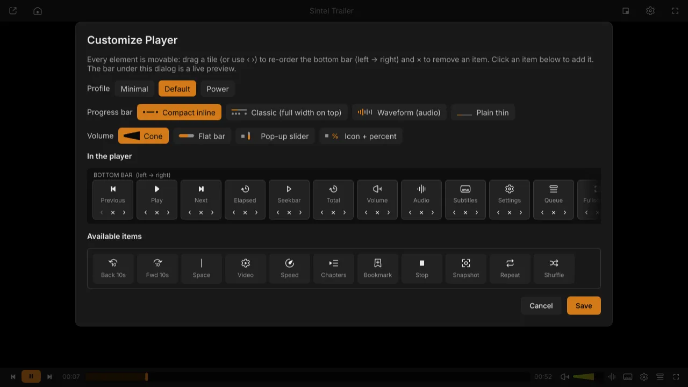
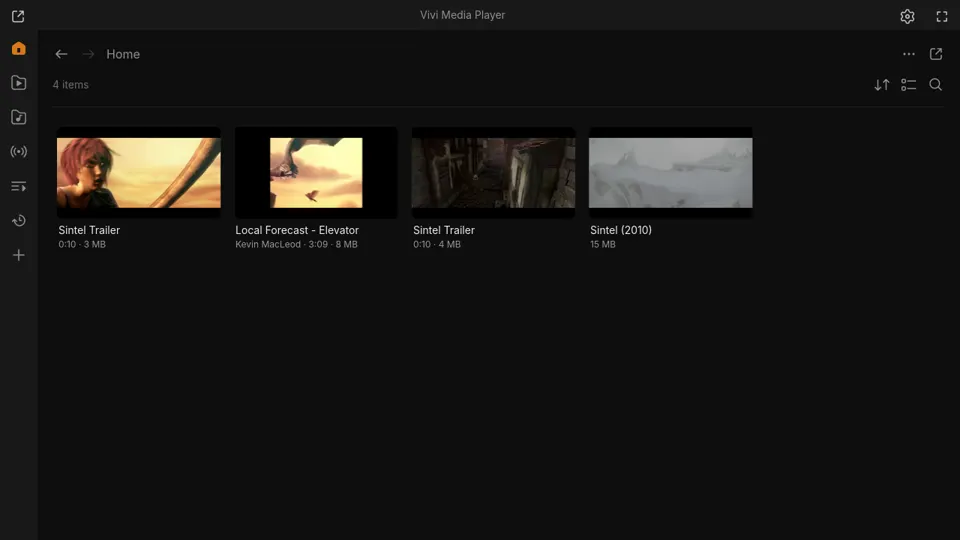
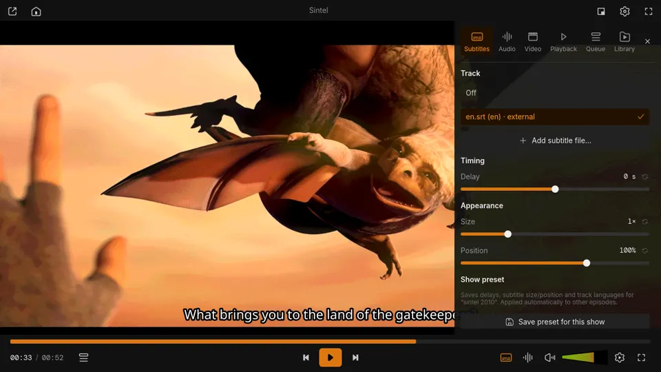
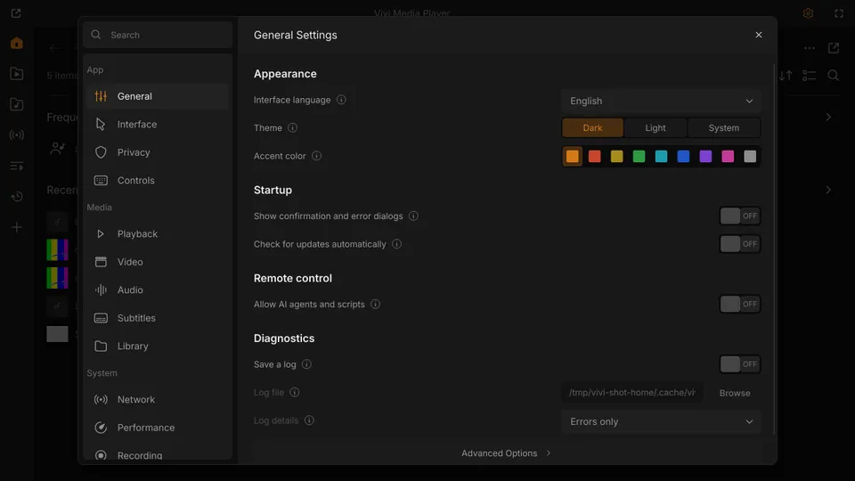
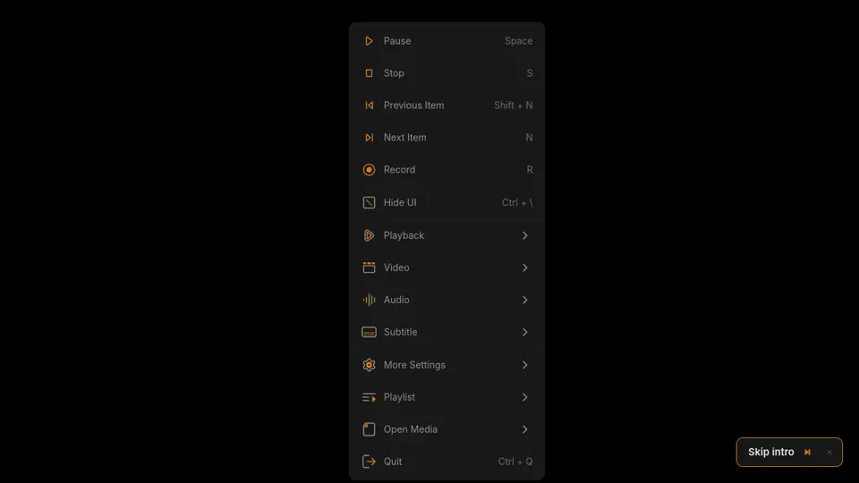
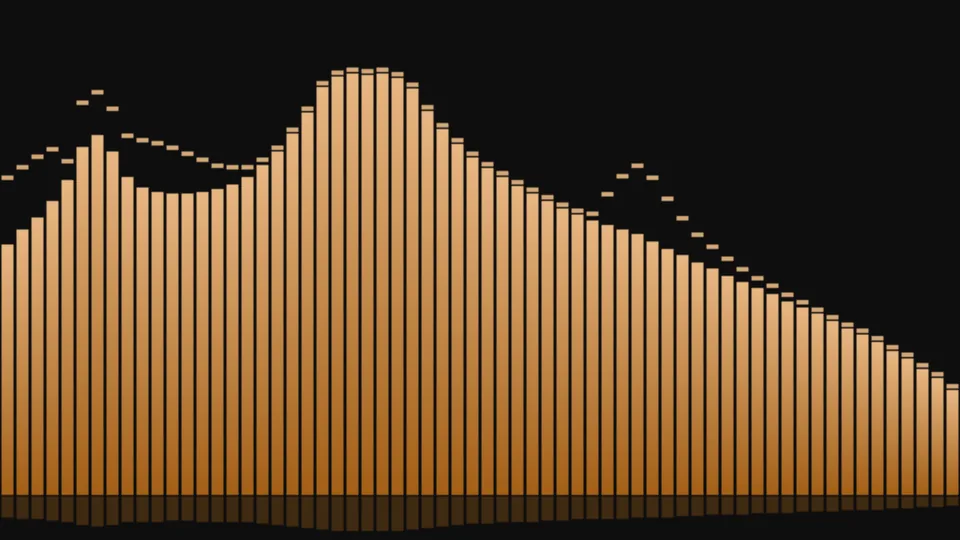
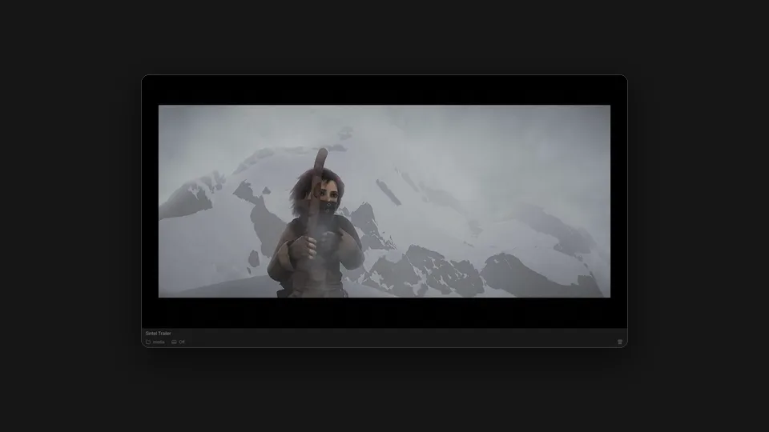
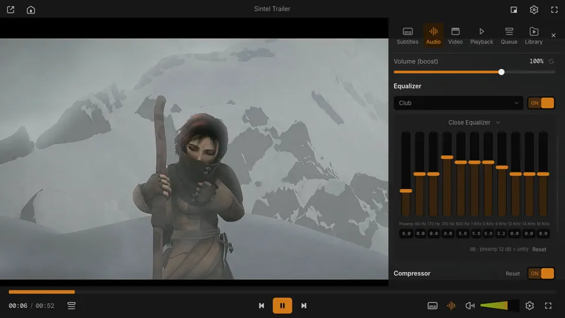
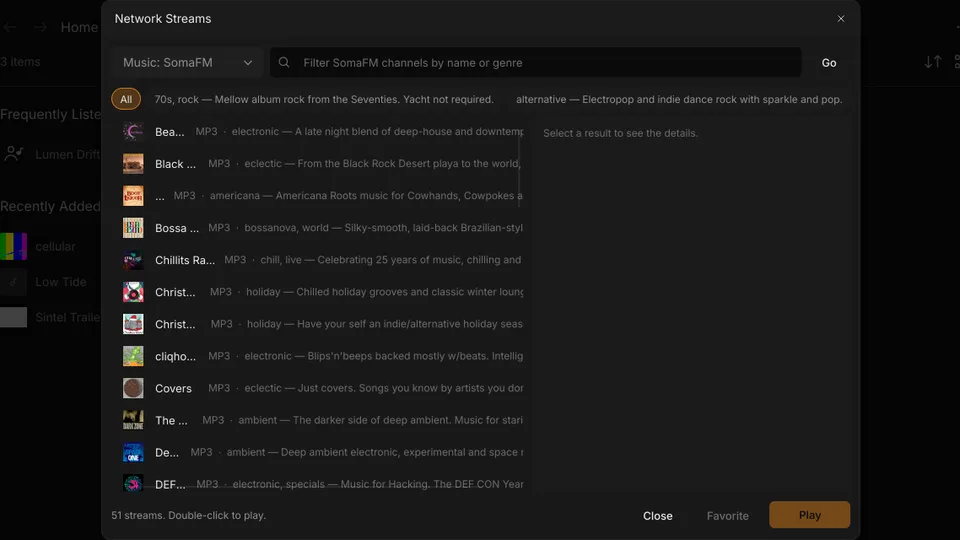

Vivi
ViviFast. Light. Clean.
Vivi is a desktop media player written in Rust on top of mpv. It opens in about a second, stays out of the way while you watch, and is surprisingly good at music.
- 14.8 MBLinux download
- 35.7 MBinstalled
- ~1 sto first window
- MITfree and open source
Made for your music, too
Most video players treat audio as an afterthought. Vivi ships the tools a music library needs.
Auto-tagger
Identifies songs by audio fingerprint on AcoustID, or by tags and file name on MusicBrainz. Results from several sources are merged and ranked by confidence; you review every field, pick a cover and embed synced lyrics. Every write is backed up and can be undone.

Karaoke lyrics
Press L for a full-screen lyrics view with the current line large and a word-by-word highlight. Synced lyrics come from .lrc files, your tags or LRCLIB; nudge the timing with [ ] and save it per track.

Waveform seekbar
For audio files the progress bar can draw the track's waveform, so you can see the quiet intro, the drop and the outro before you seek. Chapters and A-B loop ranges show up on the bar too.
Free Music
Search and browse Creative Commons and public-domain music from Jamendo, the Internet Archive and the Free Music Archive in one list, with licence filters. Downloads keep the tags, cover, licence and attribution.
Customize Player
Every element of the bottom bar is movable: re-order, remove or add buttons, times, spaces and the seekbar itself. Pick one of four progress bar styles: Compact, Classic, Waveform or Plain. The bar under the dialog is a live preview; Minimal, Default and Power profiles get you started.


And also
Plugins & marketplace
Install and update plugins from Settings → Extensions → Browse: Discord presence, phone remote, YouTube downloads, SponsorBlock, ListenBrainz, subtitle auto-sync and more. Any mpv Lua or JavaScript script works too.
AI agents over MCP
The optional vivi-mcp server lets Claude, Cursor and other agents control playback, queue and subtitles over a private local socket.
Keyboard-first
Everything has a shortcut, and one keymap drives the menus, Settings and onboarding hints.
Everything you need, nothing in the way
Everything mpv plays, in a dark UI based on the Figma “VLC Redesign”.
Plays everything
libmpv with hardware decoding on Wayland and X11, subtitles, chapters, A-B loop, speed and filters.
Library
Continue Watching, music by artist and album, folders, playlists, network streams and thumbnails.
Subtitle search
OpenSubtitles by file hash first, then by name or IMDb id; per-file offsets with Z / X.
Streams & IPTV
Internet radio, iptv-org TV, SomaFM, M3U playlists and YouTube via yt-dlp.
Remembers
Resume positions, per-show presets for delays and track languages, recent files.
Music visualizer
Spectrum, scope, waveform, radial, particle and pitch visuals fed from what mpv actually plays.
Screenshots
Captured from the release build. Click to open full size.
















Downloads
Free for Linux, Windows and macOS. Sizes are for v0.11.1.
Linux tarball
x86_64 · 14.8 MB · needs libmpv
Flatpak
x86_64 · 12.6 MB · Flathub runtime
AppImage
x86_64 · 45.6 MB · libmpv bundled
Windows 10/11
x86_64 zip · 57.8 MB · libmpv included
macOS
Apple Silicon zip · 38.8 MB · unsigned, best effort
Install
Linux (x86_64): downloads the latest release and verifies checksums.
curl -fsSL https://viviplayer.app/install.sh | sh
# uninstall (settings and library stay)
curl -fsSL https://viviplayer.app/install.sh | sh -s -- --uninstallOn Arch it builds the vivi-bin package with makepkg -si; on other distributions it installs into ~/.local and checks for libmpv. Read the script.
# From source (Arch / Omarchy)
git clone https://github.com/Loafer19/vivi && cd vivi
sudo pacman -S --needed mpv sqlite rust
cargo build --release && ./target/release/viviAppImage, tarball, Windows and macOS builds are on the releases page.
Work in progress: not every frame of the Figma design is ported yet. Progress is tracked in the milestones.